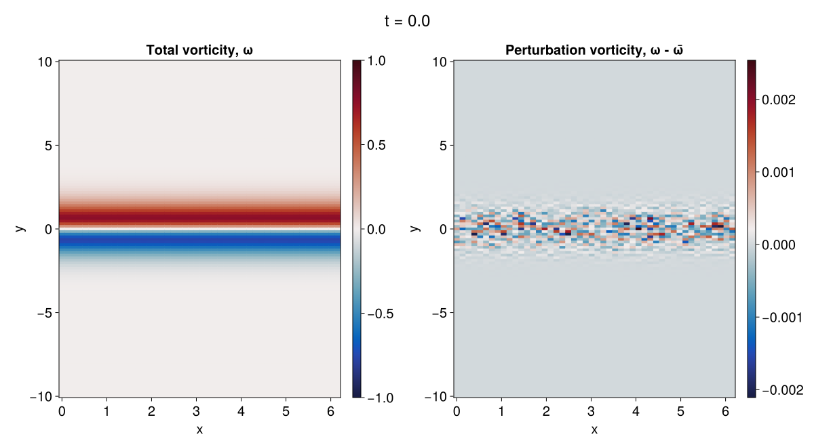
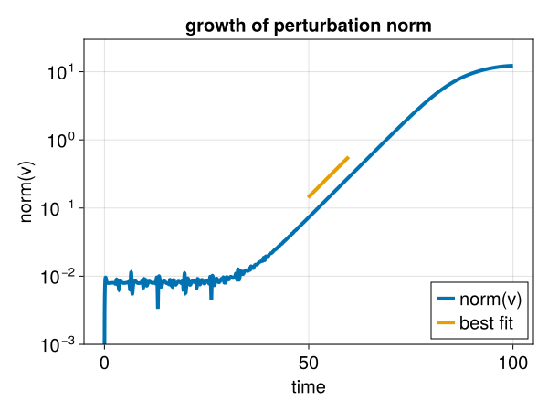

An unstable Bickley jet in Shallow Water model
This example uses Oceananigans.jl's ShallowWaterModel to simulate the evolution of an unstable, geostrophically balanced, Bickley jet The example is periodic in $x$ with flat bathymetry and uses the conservative formulation of the shallow water equations. The initial conditions superpose the Bickley jet with small-amplitude perturbations. See "The nonlinear evolution of barotropically unstable jets," J. Phys. Oceanogr. (2003) for more details on this problem.
The mass transport $(uh, vh)$ is the prognostic momentum variable in the conservative formulation of the shallow water equations, where $(u, v)$ are the horizontal velocity components and $h$ is the layer height.
Install dependencies
First we make sure that we have all of the packages that are required to run the simulation.
using Pkg
pkg"add Oceananigans, NCDatasets, Polynomials, CairoMakie"using Oceananigans
using Oceananigans.Models: ShallowWaterModelTwo-dimensional domain
The shallow water model is two-dimensional and uses grids that are Flat in the vertical direction. We use length scales non-dimensionalized by the width of the Bickley jet.
grid = RectilinearGrid(size = (48, 128),
x = (0, 2π),
y = (-10, 10),
topology = (Periodic, Bounded, Flat))48×128×1 RectilinearGrid{Float64, Periodic, Bounded, Flat} on CPU with 3×3×0 halo
├── Periodic x ∈ [-1.67581e-17, 6.28319) regularly spaced with Δx=0.1309
├── Bounded y ∈ [-10.0, 10.0] regularly spaced with Δy=0.15625
└── Flat z Building a ShallowWaterModel
We build a ShallowWaterModel with the WENO advection scheme, 3rd-order Runge-Kutta time-stepping, non-dimensional Coriolis, and gravitational acceleration
gravitational_acceleration = 1
coriolis = FPlane(f=1)
model = ShallowWaterModel(; grid, coriolis, gravitational_acceleration,
timestepper = :RungeKutta3,
momentum_advection = WENO())ShallowWaterModel{typename(CPU), Float64}(time = 0 seconds, iteration = 0)
├── grid: 48×128×1 RectilinearGrid{Float64, Periodic, Bounded, Flat} on CPU with 3×3×0 halo
├── timestepper: RungeKutta3TimeStepper
├── advection scheme:
│ ├── momentum: WENO{3, Float64, Float32}(order=5)
│ └── mass: WENO{3, Float64, Float32}(order=5)
├── tracers: ()
└── coriolis: FPlane{Float64}Background state and perturbation
The background velocity $ū$ and free-surface $η̄$ correspond to a geostrophically balanced Bickely jet with maximum speed of $U$ and maximum free-surface deformation of $Δη$,
U = 1 # Maximum jet velocity
H = 10 # Reference depth
f = coriolis.f
g = gravitational_acceleration
Δη = f * U / g # Maximum free-surface deformation as dictated by geostrophy
h̄(x, y) = H - Δη * tanh(y)
ū(x, y) = U * sech(y)^2ū (generic function with 1 method)The total height of the fluid is $h = L_z + \eta$. Linear stability theory predicts that for the parameters we consider here, the growth rate for the most unstable mode that fits our domain is approximately $0.139$.
The vorticity of the background state is
ω̄(x, y) = 2 * U * sech(y)^2 * tanh(y)ω̄ (generic function with 1 method)The initial conditions include a small-amplitude perturbation that decays away from the center of the jet.
small_amplitude = 1e-4
uⁱ(x, y) = ū(x, y) + small_amplitude * exp(-y^2) * randn()
uhⁱ(x, y) = uⁱ(x, y) * h̄(x, y)uhⁱ (generic function with 1 method)We first set a "clean" initial condition without noise for the purpose of discretely calculating the initial 'mean' vorticity,
ū̄h(x, y) = ū(x, y) * h̄(x, y)
set!(model, uh = ū̄h, h = h̄)We next compute the initial vorticity and perturbation vorticity,
uh, vh, h = model.solution
# Build velocities
u = uh / h
v = vh / h
# Build mean vorticity discretely
ω = Field(∂x(v) - ∂y(u))
# Copy mean vorticity to a new field
ωⁱ = Field{Face, Face, Nothing}(model.grid)
ωⁱ .= ω
# Use this new field to compute the perturbation vorticity
ω′ = Field(ω - ωⁱ)48×129×1 Field{Face, Face, Center} on RectilinearGrid on CPU
├── grid: 48×128×1 RectilinearGrid{Float64, Periodic, Bounded, Flat} on CPU with 3×3×0 halo
├── boundary conditions: FieldBoundaryConditions
│ └── west: Periodic, east: Periodic, south: Nothing, north: Nothing, bottom: Nothing, top: Nothing, immersed: Nothing
├── operand: BinaryOperation at (Face, Face, Center)
├── status: time=0.0
└── data: 54×135×1 OffsetArray(::Array{Float64, 3}, -2:51, -2:132, 1:1) with eltype Float64 with indices -2:51×-2:132×1:1
└── max=0.0, min=0.0, mean=0.0and finally set the "true" initial condition with noise,
set!(model, uh = uhⁱ)Running a Simulation
We pick the time-step so that we make sure we resolve the surface gravity waves, which propagate with speed of the order $\sqrt{g H}$. That is, with Δt = 1e-2 we ensure that $\sqrt{g H} Δt / Δx, \sqrt{g H} Δt / Δy < 0.7$.
simulation = Simulation(model, Δt = 1e-2, stop_time = 100)Simulation of ShallowWaterModel{RectilinearGrid{Float64, Periodic, Bounded, Flat, Oceananigans.Grids.StaticVerticalDiscretization{Nothing, Nothing, Float64, Float64}, Float64, Float64, OffsetArrays.OffsetVector{Float64, StepRangeLen{Float64, Base.TwicePrecision{Float64}, Base.TwicePrecision{Float64}, Int64}}, OffsetArrays.OffsetVector{Float64, StepRangeLen{Float64, Base.TwicePrecision{Float64}, Base.TwicePrecision{Float64}, Int64}}, CPU}, CPU, Float64, Float64, @NamedTuple{momentum::WENO{3, Float64, Float32, Nothing, WENO{2, Float64, Float32, Nothing, UpwindBiased{1, Float64, Nothing, Centered{1, Float64, Nothing}}, Centered{1, Float64, Nothing}}, Centered{2, Float64, Centered{1, Float64, Nothing}}}, mass::WENO{3, Float64, Float32, Nothing, WENO{2, Float64, Float32, Nothing, UpwindBiased{1, Float64, Nothing, Centered{1, Float64, Nothing}}, Centered{1, Float64, Nothing}}, Centered{2, Float64, Centered{1, Float64, Nothing}}}}, @NamedTuple{u::Field{Face, Center, Center, BinaryOperation{Face, Center, Center, typeof(/), Field{Face, Center, Center, Nothing, RectilinearGrid{Float64, Periodic, Bounded, Flat, Oceananigans.Grids.StaticVerticalDiscretization{Nothing, Nothing, Float64, Float64}, Float64, Float64, OffsetArrays.OffsetVector{Float64, StepRangeLen{Float64, Base.TwicePrecision{Float64}, Base.TwicePrecision{Float64}, Int64}}, OffsetArrays.OffsetVector{Float64, StepRangeLen{Float64, Base.TwicePrecision{Float64}, Base.TwicePrecision{Float64}, Int64}}, CPU}, Tuple{Colon, Colon, Colon}, OffsetArrays.OffsetArray{Float64, 3, Array{Float64, 3}}, Float64, FieldBoundaryConditions{BoundaryCondition{Oceananigans.BoundaryConditions.Periodic, Nothing}, BoundaryCondition{Oceananigans.BoundaryConditions.Periodic, Nothing}, Oceananigans.BoundaryConditions.NoFluxBoundaryCondition, Oceananigans.BoundaryConditions.NoFluxBoundaryCondition, Nothing, Nothing, Nothing, @NamedTuple{bottom_and_top::Nothing, south_and_north::KernelAbstractions.Kernel{KernelAbstractions.CPU, KernelAbstractions.NDIteration.StaticSize{(16, 16)}, KernelAbstractions.NDIteration.StaticSize{(48, 1)}, typeof(Oceananigans.BoundaryConditions.cpu__fill_south_and_north_halo!)}, west_and_east::KernelAbstractions.Kernel{KernelAbstractions.CPU, KernelAbstractions.NDIteration.StaticSize{(134, 1)}, Oceananigans.Utils.OffsetStaticSize{(1:134, 1:1)}, typeof(Oceananigans.BoundaryConditions.cpu__fill_periodic_west_and_east_halo!)}}, @NamedTuple{bottom_and_top::Tuple{Nothing, Nothing}, south_and_north::Tuple{Oceananigans.BoundaryConditions.NoFluxBoundaryCondition, Oceananigans.BoundaryConditions.NoFluxBoundaryCondition}, west_and_east::Tuple{BoundaryCondition{Oceananigans.BoundaryConditions.Periodic, Nothing}, BoundaryCondition{Oceananigans.BoundaryConditions.Periodic, Nothing}}}}, Nothing, Nothing}, Field{Center, Center, Center, Nothing, RectilinearGrid{Float64, Periodic, Bounded, Flat, Oceananigans.Grids.StaticVerticalDiscretization{Nothing, Nothing, Float64, Float64}, Float64, Float64, OffsetArrays.OffsetVector{Float64, StepRangeLen{Float64, Base.TwicePrecision{Float64}, Base.TwicePrecision{Float64}, Int64}}, OffsetArrays.OffsetVector{Float64, StepRangeLen{Float64, Base.TwicePrecision{Float64}, Base.TwicePrecision{Float64}, Int64}}, CPU}, Tuple{Colon, Colon, Colon}, OffsetArrays.OffsetArray{Float64, 3, Array{Float64, 3}}, Float64, FieldBoundaryConditions{BoundaryCondition{Oceananigans.BoundaryConditions.Periodic, Nothing}, BoundaryCondition{Oceananigans.BoundaryConditions.Periodic, Nothing}, Oceananigans.BoundaryConditions.NoFluxBoundaryCondition, Oceananigans.BoundaryConditions.NoFluxBoundaryCondition, Nothing, Nothing, Nothing, @NamedTuple{bottom_and_top::Nothing, south_and_north::KernelAbstractions.Kernel{KernelAbstractions.CPU, KernelAbstractions.NDIteration.StaticSize{(16, 16)}, KernelAbstractions.NDIteration.StaticSize{(48, 1)}, typeof(Oceananigans.BoundaryConditions.cpu__fill_south_and_north_halo!)}, west_and_east::KernelAbstractions.Kernel{KernelAbstractions.CPU, KernelAbstractions.NDIteration.StaticSize{(134, 1)}, Oceananigans.Utils.OffsetStaticSize{(1:134, 1:1)}, typeof(Oceananigans.BoundaryConditions.cpu__fill_periodic_west_and_east_halo!)}}, @NamedTuple{bottom_and_top::Tuple{Nothing, Nothing}, south_and_north::Tuple{Oceananigans.BoundaryConditions.NoFluxBoundaryCondition, Oceananigans.BoundaryConditions.NoFluxBoundaryCondition}, west_and_east::Tuple{BoundaryCondition{Oceananigans.BoundaryConditions.Periodic, Nothing}, BoundaryCondition{Oceananigans.BoundaryConditions.Periodic, Nothing}}}}, Nothing, Nothing}, typeof(Oceananigans.Operators.identity2), typeof(ℑxᶠᵃᵃ), RectilinearGrid{Float64, Periodic, Bounded, Flat, Oceananigans.Grids.StaticVerticalDiscretization{Nothing, Nothing, Float64, Float64}, Float64, Float64, OffsetArrays.OffsetVector{Float64, StepRangeLen{Float64, Base.TwicePrecision{Float64}, Base.TwicePrecision{Float64}, Int64}}, OffsetArrays.OffsetVector{Float64, StepRangeLen{Float64, Base.TwicePrecision{Float64}, Base.TwicePrecision{Float64}, Int64}}, CPU}, Float64}, RectilinearGrid{Float64, Periodic, Bounded, Flat, Oceananigans.Grids.StaticVerticalDiscretization{Nothing, Nothing, Float64, Float64}, Float64, Float64, OffsetArrays.OffsetVector{Float64, StepRangeLen{Float64, Base.TwicePrecision{Float64}, Base.TwicePrecision{Float64}, Int64}}, OffsetArrays.OffsetVector{Float64, StepRangeLen{Float64, Base.TwicePrecision{Float64}, Base.TwicePrecision{Float64}, Int64}}, CPU}, Tuple{Colon, Colon, Colon}, OffsetArrays.OffsetArray{Float64, 3, Array{Float64, 3}}, Float64, FieldBoundaryConditions{BoundaryCondition{Oceananigans.BoundaryConditions.Periodic, Nothing}, BoundaryCondition{Oceananigans.BoundaryConditions.Periodic, Nothing}, Oceananigans.BoundaryConditions.NoFluxBoundaryCondition, Oceananigans.BoundaryConditions.NoFluxBoundaryCondition, Nothing, Nothing, Nothing, @NamedTuple{bottom_and_top::Nothing, south_and_north::KernelAbstractions.Kernel{KernelAbstractions.CPU, KernelAbstractions.NDIteration.StaticSize{(16, 16)}, KernelAbstractions.NDIteration.StaticSize{(48, 1)}, typeof(Oceananigans.BoundaryConditions.cpu__fill_south_and_north_halo!)}, west_and_east::KernelAbstractions.Kernel{KernelAbstractions.CPU, KernelAbstractions.NDIteration.StaticSize{(134, 1)}, Oceananigans.Utils.OffsetStaticSize{(1:134, 1:1)}, typeof(Oceananigans.BoundaryConditions.cpu__fill_periodic_west_and_east_halo!)}}, @NamedTuple{bottom_and_top::Tuple{Nothing, Nothing}, south_and_north::Tuple{Oceananigans.BoundaryConditions.NoFluxBoundaryCondition, Oceananigans.BoundaryConditions.NoFluxBoundaryCondition}, west_and_east::Tuple{BoundaryCondition{Oceananigans.BoundaryConditions.Periodic, Nothing}, BoundaryCondition{Oceananigans.BoundaryConditions.Periodic, Nothing}}}}, Oceananigans.Fields.FieldStatus{Float64}, Nothing}, v::Field{Center, Face, Center, BinaryOperation{Center, Face, Center, typeof(/), Field{Center, Face, Center, Nothing, RectilinearGrid{Float64, Periodic, Bounded, Flat, Oceananigans.Grids.StaticVerticalDiscretization{Nothing, Nothing, Float64, Float64}, Float64, Float64, OffsetArrays.OffsetVector{Float64, StepRangeLen{Float64, Base.TwicePrecision{Float64}, Base.TwicePrecision{Float64}, Int64}}, OffsetArrays.OffsetVector{Float64, StepRangeLen{Float64, Base.TwicePrecision{Float64}, Base.TwicePrecision{Float64}, Int64}}, CPU}, Tuple{Colon, Colon, Colon}, OffsetArrays.OffsetArray{Float64, 3, Array{Float64, 3}}, Float64, FieldBoundaryConditions{BoundaryCondition{Oceananigans.BoundaryConditions.Periodic, Nothing}, BoundaryCondition{Oceananigans.BoundaryConditions.Periodic, Nothing}, BoundaryCondition{Open{Nothing}, Nothing}, BoundaryCondition{Open{Nothing}, Nothing}, Nothing, Nothing, Nothing, @NamedTuple{bottom_and_top::Nothing, south_and_north::KernelAbstractions.Kernel{KernelAbstractions.CPU, KernelAbstractions.NDIteration.StaticSize{(16, 16)}, KernelAbstractions.NDIteration.StaticSize{(48, 1)}, typeof(Oceananigans.BoundaryConditions.cpu__fill_south_and_north_halo!)}, west_and_east::KernelAbstractions.Kernel{KernelAbstractions.CPU, KernelAbstractions.NDIteration.StaticSize{(135, 1)}, Oceananigans.Utils.OffsetStaticSize{(1:135, 1:1)}, typeof(Oceananigans.BoundaryConditions.cpu__fill_periodic_west_and_east_halo!)}}, @NamedTuple{bottom_and_top::Tuple{Nothing, Nothing}, south_and_north::Tuple{BoundaryCondition{Open{Nothing}, Nothing}, BoundaryCondition{Open{Nothing}, Nothing}}, west_and_east::Tuple{BoundaryCondition{Oceananigans.BoundaryConditions.Periodic, Nothing}, BoundaryCondition{Oceananigans.BoundaryConditions.Periodic, Nothing}}}}, Nothing, Nothing}, Field{Center, Center, Center, Nothing, RectilinearGrid{Float64, Periodic, Bounded, Flat, Oceananigans.Grids.StaticVerticalDiscretization{Nothing, Nothing, Float64, Float64}, Float64, Float64, OffsetArrays.OffsetVector{Float64, StepRangeLen{Float64, Base.TwicePrecision{Float64}, Base.TwicePrecision{Float64}, Int64}}, OffsetArrays.OffsetVector{Float64, StepRangeLen{Float64, Base.TwicePrecision{Float64}, Base.TwicePrecision{Float64}, Int64}}, CPU}, Tuple{Colon, Colon, Colon}, OffsetArrays.OffsetArray{Float64, 3, Array{Float64, 3}}, Float64, FieldBoundaryConditions{BoundaryCondition{Oceananigans.BoundaryConditions.Periodic, Nothing}, BoundaryCondition{Oceananigans.BoundaryConditions.Periodic, Nothing}, Oceananigans.BoundaryConditions.NoFluxBoundaryCondition, Oceananigans.BoundaryConditions.NoFluxBoundaryCondition, Nothing, Nothing, Nothing, @NamedTuple{bottom_and_top::Nothing, south_and_north::KernelAbstractions.Kernel{KernelAbstractions.CPU, KernelAbstractions.NDIteration.StaticSize{(16, 16)}, KernelAbstractions.NDIteration.StaticSize{(48, 1)}, typeof(Oceananigans.BoundaryConditions.cpu__fill_south_and_north_halo!)}, west_and_east::KernelAbstractions.Kernel{KernelAbstractions.CPU, KernelAbstractions.NDIteration.StaticSize{(134, 1)}, Oceananigans.Utils.OffsetStaticSize{(1:134, 1:1)}, typeof(Oceananigans.BoundaryConditions.cpu__fill_periodic_west_and_east_halo!)}}, @NamedTuple{bottom_and_top::Tuple{Nothing, Nothing}, south_and_north::Tuple{Oceananigans.BoundaryConditions.NoFluxBoundaryCondition, Oceananigans.BoundaryConditions.NoFluxBoundaryCondition}, west_and_east::Tuple{BoundaryCondition{Oceananigans.BoundaryConditions.Periodic, Nothing}, BoundaryCondition{Oceananigans.BoundaryConditions.Periodic, Nothing}}}}, Nothing, Nothing}, typeof(Oceananigans.Operators.identity3), typeof(ℑyᵃᶠᵃ), RectilinearGrid{Float64, Periodic, Bounded, Flat, Oceananigans.Grids.StaticVerticalDiscretization{Nothing, Nothing, Float64, Float64}, Float64, Float64, OffsetArrays.OffsetVector{Float64, StepRangeLen{Float64, Base.TwicePrecision{Float64}, Base.TwicePrecision{Float64}, Int64}}, OffsetArrays.OffsetVector{Float64, StepRangeLen{Float64, Base.TwicePrecision{Float64}, Base.TwicePrecision{Float64}, Int64}}, CPU}, Float64}, RectilinearGrid{Float64, Periodic, Bounded, Flat, Oceananigans.Grids.StaticVerticalDiscretization{Nothing, Nothing, Float64, Float64}, Float64, Float64, OffsetArrays.OffsetVector{Float64, StepRangeLen{Float64, Base.TwicePrecision{Float64}, Base.TwicePrecision{Float64}, Int64}}, OffsetArrays.OffsetVector{Float64, StepRangeLen{Float64, Base.TwicePrecision{Float64}, Base.TwicePrecision{Float64}, Int64}}, CPU}, Tuple{Colon, Colon, Colon}, OffsetArrays.OffsetArray{Float64, 3, Array{Float64, 3}}, Float64, FieldBoundaryConditions{BoundaryCondition{Oceananigans.BoundaryConditions.Periodic, Nothing}, BoundaryCondition{Oceananigans.BoundaryConditions.Periodic, Nothing}, Nothing, Nothing, Nothing, Nothing, Nothing, @NamedTuple{bottom_and_top::Nothing, south_and_north::Nothing, west_and_east::KernelAbstractions.Kernel{KernelAbstractions.CPU, KernelAbstractions.NDIteration.StaticSize{(135, 1)}, Oceananigans.Utils.OffsetStaticSize{(1:135, 1:1)}, typeof(Oceananigans.BoundaryConditions.cpu__fill_periodic_west_and_east_halo!)}}, @NamedTuple{bottom_and_top::Tuple{Nothing, Nothing}, south_and_north::Tuple{Nothing, Nothing}, west_and_east::Tuple{BoundaryCondition{Oceananigans.BoundaryConditions.Periodic, Nothing}, BoundaryCondition{Oceananigans.BoundaryConditions.Periodic, Nothing}}}}, Oceananigans.Fields.FieldStatus{Float64}, Nothing}, w::Nothing}, FPlane{Float64}, @NamedTuple{uh::typeof(Oceananigans.Forcings.zeroforcing), vh::typeof(Oceananigans.Forcings.zeroforcing), h::typeof(Oceananigans.Forcings.zeroforcing)}, Nothing, Field{Center, Center, Center, Nothing, RectilinearGrid{Float64, Periodic, Bounded, Flat, Oceananigans.Grids.StaticVerticalDiscretization{Nothing, Nothing, Float64, Float64}, Float64, Float64, OffsetArrays.OffsetVector{Float64, StepRangeLen{Float64, Base.TwicePrecision{Float64}, Base.TwicePrecision{Float64}, Int64}}, OffsetArrays.OffsetVector{Float64, StepRangeLen{Float64, Base.TwicePrecision{Float64}, Base.TwicePrecision{Float64}, Int64}}, CPU}, Tuple{Colon, Colon, Colon}, OffsetArrays.OffsetArray{Float64, 3, Array{Float64, 3}}, Float64, FieldBoundaryConditions{BoundaryCondition{Oceananigans.BoundaryConditions.Periodic, Nothing}, BoundaryCondition{Oceananigans.BoundaryConditions.Periodic, Nothing}, Oceananigans.BoundaryConditions.NoFluxBoundaryCondition, Oceananigans.BoundaryConditions.NoFluxBoundaryCondition, Nothing, Nothing, Nothing, @NamedTuple{bottom_and_top::Nothing, south_and_north::KernelAbstractions.Kernel{KernelAbstractions.CPU, KernelAbstractions.NDIteration.StaticSize{(16, 16)}, KernelAbstractions.NDIteration.StaticSize{(48, 1)}, typeof(Oceananigans.BoundaryConditions.cpu__fill_south_and_north_halo!)}, west_and_east::KernelAbstractions.Kernel{KernelAbstractions.CPU, KernelAbstractions.NDIteration.StaticSize{(134, 1)}, Oceananigans.Utils.OffsetStaticSize{(1:134, 1:1)}, typeof(Oceananigans.BoundaryConditions.cpu__fill_periodic_west_and_east_halo!)}}, @NamedTuple{bottom_and_top::Tuple{Nothing, Nothing}, south_and_north::Tuple{Oceananigans.BoundaryConditions.NoFluxBoundaryCondition, Oceananigans.BoundaryConditions.NoFluxBoundaryCondition}, west_and_east::Tuple{BoundaryCondition{Oceananigans.BoundaryConditions.Periodic, Nothing}, BoundaryCondition{Oceananigans.BoundaryConditions.Periodic, Nothing}}}}, Nothing, Nothing}, @NamedTuple{uh::Field{Face, Center, Center, Nothing, RectilinearGrid{Float64, Periodic, Bounded, Flat, Oceananigans.Grids.StaticVerticalDiscretization{Nothing, Nothing, Float64, Float64}, Float64, Float64, OffsetArrays.OffsetVector{Float64, StepRangeLen{Float64, Base.TwicePrecision{Float64}, Base.TwicePrecision{Float64}, Int64}}, OffsetArrays.OffsetVector{Float64, StepRangeLen{Float64, Base.TwicePrecision{Float64}, Base.TwicePrecision{Float64}, Int64}}, CPU}, Tuple{Colon, Colon, Colon}, OffsetArrays.OffsetArray{Float64, 3, Array{Float64, 3}}, Float64, FieldBoundaryConditions{BoundaryCondition{Oceananigans.BoundaryConditions.Periodic, Nothing}, BoundaryCondition{Oceananigans.BoundaryConditions.Periodic, Nothing}, Oceananigans.BoundaryConditions.NoFluxBoundaryCondition, Oceananigans.BoundaryConditions.NoFluxBoundaryCondition, Nothing, Nothing, Nothing, @NamedTuple{bottom_and_top::Nothing, south_and_north::KernelAbstractions.Kernel{KernelAbstractions.CPU, KernelAbstractions.NDIteration.StaticSize{(16, 16)}, KernelAbstractions.NDIteration.StaticSize{(48, 1)}, typeof(Oceananigans.BoundaryConditions.cpu__fill_south_and_north_halo!)}, west_and_east::KernelAbstractions.Kernel{KernelAbstractions.CPU, KernelAbstractions.NDIteration.StaticSize{(134, 1)}, Oceananigans.Utils.OffsetStaticSize{(1:134, 1:1)}, typeof(Oceananigans.BoundaryConditions.cpu__fill_periodic_west_and_east_halo!)}}, @NamedTuple{bottom_and_top::Tuple{Nothing, Nothing}, south_and_north::Tuple{Oceananigans.BoundaryConditions.NoFluxBoundaryCondition, Oceananigans.BoundaryConditions.NoFluxBoundaryCondition}, west_and_east::Tuple{BoundaryCondition{Oceananigans.BoundaryConditions.Periodic, Nothing}, BoundaryCondition{Oceananigans.BoundaryConditions.Periodic, Nothing}}}}, Nothing, Nothing}, vh::Field{Center, Face, Center, Nothing, RectilinearGrid{Float64, Periodic, Bounded, Flat, Oceananigans.Grids.StaticVerticalDiscretization{Nothing, Nothing, Float64, Float64}, Float64, Float64, OffsetArrays.OffsetVector{Float64, StepRangeLen{Float64, Base.TwicePrecision{Float64}, Base.TwicePrecision{Float64}, Int64}}, OffsetArrays.OffsetVector{Float64, StepRangeLen{Float64, Base.TwicePrecision{Float64}, Base.TwicePrecision{Float64}, Int64}}, CPU}, Tuple{Colon, Colon, Colon}, OffsetArrays.OffsetArray{Float64, 3, Array{Float64, 3}}, Float64, FieldBoundaryConditions{BoundaryCondition{Oceananigans.BoundaryConditions.Periodic, Nothing}, BoundaryCondition{Oceananigans.BoundaryConditions.Periodic, Nothing}, BoundaryCondition{Open{Nothing}, Nothing}, BoundaryCondition{Open{Nothing}, Nothing}, Nothing, Nothing, Nothing, @NamedTuple{bottom_and_top::Nothing, south_and_north::KernelAbstractions.Kernel{KernelAbstractions.CPU, KernelAbstractions.NDIteration.StaticSize{(16, 16)}, KernelAbstractions.NDIteration.StaticSize{(48, 1)}, typeof(Oceananigans.BoundaryConditions.cpu__fill_south_and_north_halo!)}, west_and_east::KernelAbstractions.Kernel{KernelAbstractions.CPU, KernelAbstractions.NDIteration.StaticSize{(135, 1)}, Oceananigans.Utils.OffsetStaticSize{(1:135, 1:1)}, typeof(Oceananigans.BoundaryConditions.cpu__fill_periodic_west_and_east_halo!)}}, @NamedTuple{bottom_and_top::Tuple{Nothing, Nothing}, south_and_north::Tuple{BoundaryCondition{Open{Nothing}, Nothing}, BoundaryCondition{Open{Nothing}, Nothing}}, west_and_east::Tuple{BoundaryCondition{Oceananigans.BoundaryConditions.Periodic, Nothing}, BoundaryCondition{Oceananigans.BoundaryConditions.Periodic, Nothing}}}}, Nothing, Nothing}, h::Field{Center, Center, Center, Nothing, RectilinearGrid{Float64, Periodic, Bounded, Flat, Oceananigans.Grids.StaticVerticalDiscretization{Nothing, Nothing, Float64, Float64}, Float64, Float64, OffsetArrays.OffsetVector{Float64, StepRangeLen{Float64, Base.TwicePrecision{Float64}, Base.TwicePrecision{Float64}, Int64}}, OffsetArrays.OffsetVector{Float64, StepRangeLen{Float64, Base.TwicePrecision{Float64}, Base.TwicePrecision{Float64}, Int64}}, CPU}, Tuple{Colon, Colon, Colon}, OffsetArrays.OffsetArray{Float64, 3, Array{Float64, 3}}, Float64, FieldBoundaryConditions{BoundaryCondition{Oceananigans.BoundaryConditions.Periodic, Nothing}, BoundaryCondition{Oceananigans.BoundaryConditions.Periodic, Nothing}, Oceananigans.BoundaryConditions.NoFluxBoundaryCondition, Oceananigans.BoundaryConditions.NoFluxBoundaryCondition, Nothing, Nothing, Nothing, @NamedTuple{bottom_and_top::Nothing, south_and_north::KernelAbstractions.Kernel{KernelAbstractions.CPU, KernelAbstractions.NDIteration.StaticSize{(16, 16)}, KernelAbstractions.NDIteration.StaticSize{(48, 1)}, typeof(Oceananigans.BoundaryConditions.cpu__fill_south_and_north_halo!)}, west_and_east::KernelAbstractions.Kernel{KernelAbstractions.CPU, KernelAbstractions.NDIteration.StaticSize{(134, 1)}, Oceananigans.Utils.OffsetStaticSize{(1:134, 1:1)}, typeof(Oceananigans.BoundaryConditions.cpu__fill_periodic_west_and_east_halo!)}}, @NamedTuple{bottom_and_top::Tuple{Nothing, Nothing}, south_and_north::Tuple{Oceananigans.BoundaryConditions.NoFluxBoundaryCondition, Oceananigans.BoundaryConditions.NoFluxBoundaryCondition}, west_and_east::Tuple{BoundaryCondition{Oceananigans.BoundaryConditions.Periodic, Nothing}, BoundaryCondition{Oceananigans.BoundaryConditions.Periodic, Nothing}}}}, Nothing, Nothing}}, @NamedTuple{}, Nothing, RungeKutta3TimeStepper{Float64, @NamedTuple{uh::Field{Face, Center, Center, Nothing, RectilinearGrid{Float64, Periodic, Bounded, Flat, Oceananigans.Grids.StaticVerticalDiscretization{Nothing, Nothing, Float64, Float64}, Float64, Float64, OffsetArrays.OffsetVector{Float64, StepRangeLen{Float64, Base.TwicePrecision{Float64}, Base.TwicePrecision{Float64}, Int64}}, OffsetArrays.OffsetVector{Float64, StepRangeLen{Float64, Base.TwicePrecision{Float64}, Base.TwicePrecision{Float64}, Int64}}, CPU}, Tuple{Colon, Colon, Colon}, OffsetArrays.OffsetArray{Float64, 3, Array{Float64, 3}}, Float64, FieldBoundaryConditions{BoundaryCondition{Oceananigans.BoundaryConditions.Periodic, Nothing}, BoundaryCondition{Oceananigans.BoundaryConditions.Periodic, Nothing}, Oceananigans.BoundaryConditions.NoFluxBoundaryCondition, Oceananigans.BoundaryConditions.NoFluxBoundaryCondition, Nothing, Nothing, Nothing, @NamedTuple{bottom_and_top::Nothing, south_and_north::KernelAbstractions.Kernel{KernelAbstractions.CPU, KernelAbstractions.NDIteration.StaticSize{(16, 16)}, KernelAbstractions.NDIteration.StaticSize{(48, 1)}, typeof(Oceananigans.BoundaryConditions.cpu__fill_south_and_north_halo!)}, west_and_east::KernelAbstractions.Kernel{KernelAbstractions.CPU, KernelAbstractions.NDIteration.StaticSize{(134, 1)}, Oceananigans.Utils.OffsetStaticSize{(1:134, 1:1)}, typeof(Oceananigans.BoundaryConditions.cpu__fill_periodic_west_and_east_halo!)}}, @NamedTuple{bottom_and_top::Tuple{Nothing, Nothing}, south_and_north::Tuple{Oceananigans.BoundaryConditions.NoFluxBoundaryCondition, Oceananigans.BoundaryConditions.NoFluxBoundaryCondition}, west_and_east::Tuple{BoundaryCondition{Oceananigans.BoundaryConditions.Periodic, Nothing}, BoundaryCondition{Oceananigans.BoundaryConditions.Periodic, Nothing}}}}, Nothing, Nothing}, vh::Field{Center, Face, Center, Nothing, RectilinearGrid{Float64, Periodic, Bounded, Flat, Oceananigans.Grids.StaticVerticalDiscretization{Nothing, Nothing, Float64, Float64}, Float64, Float64, OffsetArrays.OffsetVector{Float64, StepRangeLen{Float64, Base.TwicePrecision{Float64}, Base.TwicePrecision{Float64}, Int64}}, OffsetArrays.OffsetVector{Float64, StepRangeLen{Float64, Base.TwicePrecision{Float64}, Base.TwicePrecision{Float64}, Int64}}, CPU}, Tuple{Colon, Colon, Colon}, OffsetArrays.OffsetArray{Float64, 3, Array{Float64, 3}}, Float64, FieldBoundaryConditions{BoundaryCondition{Oceananigans.BoundaryConditions.Periodic, Nothing}, BoundaryCondition{Oceananigans.BoundaryConditions.Periodic, Nothing}, Nothing, Nothing, Nothing, Nothing, Nothing, @NamedTuple{bottom_and_top::Nothing, south_and_north::Nothing, west_and_east::KernelAbstractions.Kernel{KernelAbstractions.CPU, KernelAbstractions.NDIteration.StaticSize{(135, 1)}, Oceananigans.Utils.OffsetStaticSize{(1:135, 1:1)}, typeof(Oceananigans.BoundaryConditions.cpu__fill_periodic_west_and_east_halo!)}}, @NamedTuple{bottom_and_top::Tuple{Nothing, Nothing}, south_and_north::Tuple{Nothing, Nothing}, west_and_east::Tuple{BoundaryCondition{Oceananigans.BoundaryConditions.Periodic, Nothing}, BoundaryCondition{Oceananigans.BoundaryConditions.Periodic, Nothing}}}}, Nothing, Nothing}, h::Field{Center, Center, Center, Nothing, RectilinearGrid{Float64, Periodic, Bounded, Flat, Oceananigans.Grids.StaticVerticalDiscretization{Nothing, Nothing, Float64, Float64}, Float64, Float64, OffsetArrays.OffsetVector{Float64, StepRangeLen{Float64, Base.TwicePrecision{Float64}, Base.TwicePrecision{Float64}, Int64}}, OffsetArrays.OffsetVector{Float64, StepRangeLen{Float64, Base.TwicePrecision{Float64}, Base.TwicePrecision{Float64}, Int64}}, CPU}, Tuple{Colon, Colon, Colon}, OffsetArrays.OffsetArray{Float64, 3, Array{Float64, 3}}, Float64, FieldBoundaryConditions{BoundaryCondition{Oceananigans.BoundaryConditions.Periodic, Nothing}, BoundaryCondition{Oceananigans.BoundaryConditions.Periodic, Nothing}, Oceananigans.BoundaryConditions.NoFluxBoundaryCondition, Oceananigans.BoundaryConditions.NoFluxBoundaryCondition, Nothing, Nothing, Nothing, @NamedTuple{bottom_and_top::Nothing, south_and_north::KernelAbstractions.Kernel{KernelAbstractions.CPU, KernelAbstractions.NDIteration.StaticSize{(16, 16)}, KernelAbstractions.NDIteration.StaticSize{(48, 1)}, typeof(Oceananigans.BoundaryConditions.cpu__fill_south_and_north_halo!)}, west_and_east::KernelAbstractions.Kernel{KernelAbstractions.CPU, KernelAbstractions.NDIteration.StaticSize{(134, 1)}, Oceananigans.Utils.OffsetStaticSize{(1:134, 1:1)}, typeof(Oceananigans.BoundaryConditions.cpu__fill_periodic_west_and_east_halo!)}}, @NamedTuple{bottom_and_top::Tuple{Nothing, Nothing}, south_and_north::Tuple{Oceananigans.BoundaryConditions.NoFluxBoundaryCondition, Oceananigans.BoundaryConditions.NoFluxBoundaryCondition}, west_and_east::Tuple{BoundaryCondition{Oceananigans.BoundaryConditions.Periodic, Nothing}, BoundaryCondition{Oceananigans.BoundaryConditions.Periodic, Nothing}}}}, Nothing, Nothing}}, Nothing}, ConservativeFormulation}
├── Next time step: 10 ms
├── Elapsed wall time: 0 seconds
├── Wall time per iteration: NaN days
├── Stop time: 1.667 minutes
├── Stop iteration: Inf
├── Wall time limit: Inf
├── Minimum relative step: 0.0
├── Callbacks: OrderedDict with 4 entries:
│ ├── stop_time_exceeded => 4
│ ├── stop_iteration_exceeded => -
│ ├── wall_time_limit_exceeded => e
│ └── nan_checker => }
├── Output writers: OrderedDict with no entries
└── Diagnostics: OrderedDict with no entriesPrepare output files
Define a function to compute the norm of the perturbation on the cross channel velocity. We obtain the norm function from LinearAlgebra.
using LinearAlgebra: norm
perturbation_norm(args...) = norm(v)perturbation_norm (generic function with 1 method)Build the output_writer for the two-dimensional fields to be output. Output every t = 1.0. Note that we need NCDatasets to be able to use the NetCDFWriter.
using NCDatasets
fields_filename = joinpath(@__DIR__, "shallow_water_Bickley_jet_fields.nc")
simulation.output_writers[:fields] = NetCDFWriter(model, (; ω, ω′),
filename = fields_filename,
schedule = TimeInterval(2),
overwrite_existing = true)NetCDFWriter scheduled on TimeInterval(2 seconds):
├── filepath: shallow_water_Bickley_jet_fields.nc
├── dimensions: time(0), y_afa(129), x_faa(48), x_caa(48), y_aca(128)
├── 2 outputs: (ω, ω′)
├── array_type: Array{Float32}
├── file_splitting: NoFileSplitting
└── file size: 27.7 KiBBuild the output_writer for the growth rate, which is a scalar field. Output every time step.
growth_filename = joinpath(@__DIR__, "shallow_water_Bickley_jet_perturbation_norm.nc")
simulation.output_writers[:growth] = NetCDFWriter(model, (; perturbation_norm),
filename = growth_filename,
schedule = IterationInterval(1),
dimensions = (; perturbation_norm = ()),
overwrite_existing = true)NetCDFWriter scheduled on IterationInterval(1):
├── filepath: shallow_water_Bickley_jet_perturbation_norm.nc
├── dimensions: time(0), y_afa(129), x_faa(48), x_caa(48), y_aca(128)
├── 1 outputs: perturbation_norm
├── array_type: Array{Float32}
├── file_splitting: NoFileSplitting
└── file size: 26.8 KiBAnd finally run the simulation.
run!(simulation)[ Info: Initializing simulation...
[ Info: ... simulation initialization complete (5.849 seconds)
[ Info: Executing initial time step...
[ Info: ... initial time step complete (3.543 seconds).
[ Info: Simulation is stopping after running for 1.051 minutes.
[ Info: Simulation time 1.667 minutes equals or exceeds stop time 1.667 minutes.
Visualize the results
Load required packages to read output and plot.
using NCDatasets, Printf, CairoMakieDefine the coordinates for plotting.
x, y = xnodes(ω), ynodes(ω)Read in the output_writer for the two-dimensional fields and then create an animation showing both the total and perturbation vorticities.
fig = Figure(size = (1200, 660))
axis_kwargs = (xlabel = "x", ylabel = "y")
ax_ω = Axis(fig[2, 1]; title = "Total vorticity, ω", axis_kwargs...)
ax_ω′ = Axis(fig[2, 3]; title = "Perturbation vorticity, ω - ω̄", axis_kwargs...)
n = Observable(1)
ds = NCDataset(simulation.output_writers[:fields].filepath, "r")
times = ds["time"][:]
ω = @lift ds["ω"][:, :, $n]
hm_ω = heatmap!(ax_ω, x, y, ω, colorrange = (-1, 1), colormap = :balance)
Colorbar(fig[2, 2], hm_ω)
ω′ = @lift ds["ω′"][:, :, $n]
hm_ω′ = heatmap!(ax_ω′, x, y, ω′, colormap = :balance)
Colorbar(fig[2, 4], hm_ω′)
title = @lift @sprintf("t = %.1f", times[$n])
fig[1, 1:4] = Label(fig, title, fontsize=24, tellwidth=false)
fig
Finally, we record a movie.
frames = 1:length(times)
record(fig, "shallow_water_Bickley_jet.mp4", frames, framerate=12) do i
n[] = i
endIt's always good practice to close the NetCDF files when we are done.
close(ds)closed DatasetRead in the output_writer for the scalar field (the norm of $v$-velocity).
ds2 = NCDataset(simulation.output_writers[:growth].filepath, "r")
t = ds2["time"][:]
norm_v = ds2["perturbation_norm"][:]
close(ds2)We import the fit function from Polynomials.jl to compute the best-fit slope of the perturbation norm on a logarithmic plot. This slope corresponds to the growth rate.
using Polynomials: fit
I = 5000:6000
degree = 1
linear_fit_polynomial = fit(t[I], log.(norm_v[I]), degree, var = :t)We can get the coefficient of the $n$-th power from the fitted polynomial by using n as an index, e.g.,
constant, slope = linear_fit_polynomial[0], linear_fit_polynomial[1](-9.524905950800612, 0.1381142317529374)We then use the computed linear fit coefficients to construct the best fit and plot it together with the time-series for the perturbation norm for comparison.
best_fit = @. exp(constant + slope * t)
lines(t, norm_v;
linewidth = 4,
label = "norm(v)",
axis = (yscale = log10,
limits = (nothing, (1e-3, 30)),
xlabel = "time",
ylabel = "norm(v)",
title = "growth of perturbation norm"))
lines!(t[I], 2 * best_fit[I]; # factor 2 offsets fit from curve for better visualization
linewidth = 4,
label = "best fit")
axislegend(position = :rb)

The slope of the best-fit curve on a logarithmic scale approximates the rate at which instability grows in the simulation. Let's see how this compares with the theoretical growth rate.
println("Numerical growth rate is approximated to be ", round(slope, digits=3), ",\n",
"which is very close to the theoretical value of 0.139.")Numerical growth rate is approximated to be 0.138,
which is very close to the theoretical value of 0.139.
This page was generated using Literate.jl.